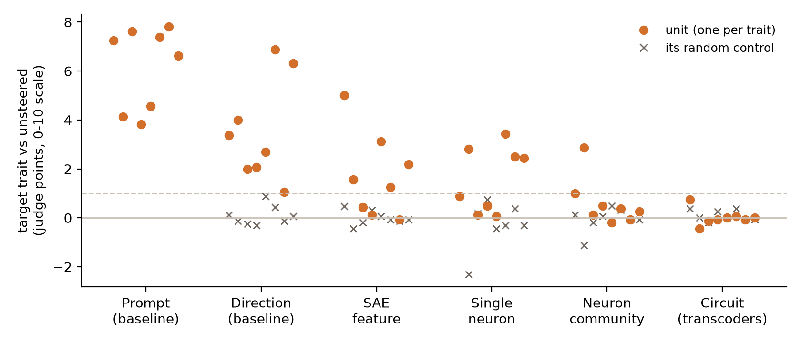
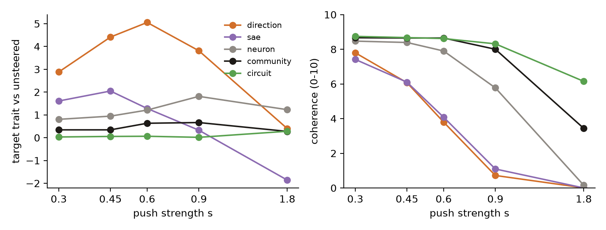
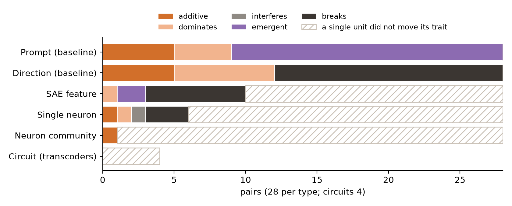
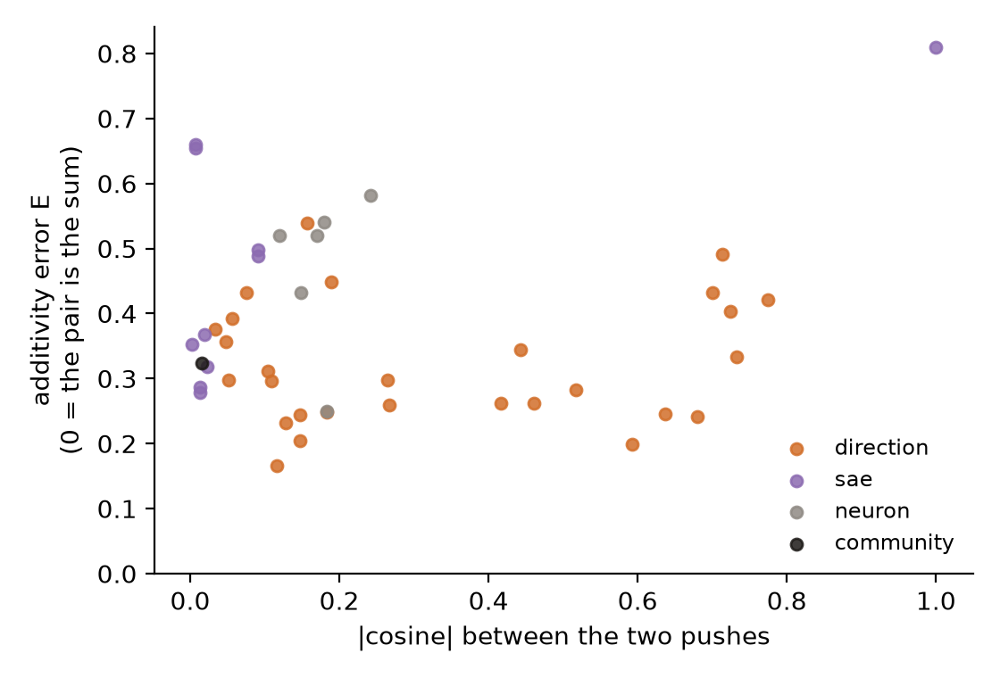

← Research·Experiments·
Mixing two voices inside a model: plain directions add up best, and neuron communities barely move the voice
Push one unit of a language model on every word and its writing voice changes; push two at once and you get a mix. Which kind of unit gives a mix you could have predicted from its parts? Across 9,808 judged replies from Gemma-2-2B-it, plain steering directions moved all eight voices and their pairs came closest to the sum; single neurons and SAE features moved half the voices, neuron communities two, attribution-graph circuits none, and most pairs pushed at full strength broke. A playable table of every measured mix, and a walk through how neurons work in Qwen3-8B, come with it.
results/analysis_heldout.json). Drawn by make_cover.py.Summary: the short answer and the key results
In short
When two units inside a model are pushed at once, which kind of unit gives a voice you could have predicted from the two alone?
The plainest one. On Gemma-2-2B-it, a difference-of-means direction per voice moved all 8 writing voices (terse, formal, salesy, assistant-like, warm, playful, hedging, casual) by at least a point on a 0-10 judge scale, where random directions of the same size moved them by 0.1 on average. Pushed in pairs, the directions' mix was closest to the sum of the two single effects: median additivity error 0.30 [0.26, 0.37] over 28 pairs, where 0 means exactly the sum. SAE features moved 5 of 8 voices (error 0.43 over 10 scorable pairs), single neurons 4 of 8 (0.52 over 6), neuron communities 2 of 8 (one scorable pair) and attribution-graph circuits none. At the strengths where single units worked best, 16 of 28 direction pairs broke into loops, and random pairs at the same strengths broke as often: a mix fails mostly because the total push is too big. The cosine between two pushes did not predict how well they mixed.
Key results
| What we tested | Result | Compared with |
|---|---|---|
| Which units move a voice at all? (≥ 1 point on the voice they were chosen for, 16 held-out prompts) | Directions 8/8 [0.68, 1.00], SAE features 5/8, single neurons 4/8, neuron communities 2/8 [0.07, 0.59], circuits 0/8 [0.00, 0.32] | Shape-matched random units: mean −0.14 to +0.09 points; prompting moves all 8 by +6.1 on average |
| Which units compose most predictably? | Directions: median additivity error 0.30 [0.26, 0.37], n = 28; the sum of the singles explains 73% of the pairs' profiles | SAE 0.43 [0.32, 0.65], n = 10; neurons 0.52 [0.34, 0.56], n = 6; communities n = 1; prompting 0.33 [0.28, 0.40] |
| What happens to a pair pushed at full strength? | Most break: 16 of 28 direction pairs loop or lose coherence (coherence 7.1 alone, 4.1 together); 5 add up, 7 have one voice win | Random pairs at the same strengths: 5 of 7 break for neurons and SAE features, 4 of 7 for communities |
| Is a unit one voice? | No; measured profiles are broad: the salesy direction's biggest effect is playful (+3.8, against +2.0 salesy); one SAE feature, labelled “phrases related to currency and financial matters”, is the unit chosen for both casual and playful | Directions move 3.3 voices by ≥ 1.5 points on average, single neurons 1.4, communities 0.4 |
| Does geometry predict the mix? | No: Spearman between the two pushes' |cosine| and the additivity error −0.02 over all 116 steered pairs (−0.10 over the 45 scorable ones) | Pre-registered prediction: ≥ 0.30 |
| Can the judge be trusted? | Both judges ranked all 8 voices perfectly on known answers (AUROC 1.00); a second model family agreed on real replies at mean Spearman 0.79, and on the mix labels for 47 of 65 steering pairs (0.72; bar 0.70), scored on the same replies; billing cut the check short of the other 51 pairs | Pass bars written before any judging |


01Introduction
Gemma Scope's feature 7,903 in layer 12 of Gemma-2-2B has a public label: “phrases and terms related to currency and financial matters”. Push it while Gemma-2-2B-it describes a rainy afternoon in a café and the reply says nothing about money: “The barista, *Barnaby* (with a beard and a beanie) was brewing up some coffee to get the caffeine fix in your face.” The judge scored that reply 7 out of 10 for casual and 6 for playful, against 1 and 1 for the plain model. Of 16,384 features, this one moved the casual voice most on our development prompts, and it moved the playful voice almost as much.
What is known. Neuron Alchemist, a web game over Qwen3.5-4B, pushes one MLP neuron on every word to give the model a character, drags two together to push both, and asks a judge whether both characters come through; its labels are crowd guesses, and some are wrong. neuronary.org collects hundreds more such neuron finds. Separately, Discovering neuron communities grouped neurons that work together, and our neuron-communities note found that some of those groups can steer a model's topic.
What is missing. No one has compared kinds of unit on the same task: whether a neuron, a group of neurons, an SAE feature or a circuit gives a mix you could predict, measured against random units of the same shape, with loops counted and the judge checked.
Which unit of a model composes most predictably: when two are pushed at once, does the voice come out as the sum of the two?
What this note does. It labels every unit by a measured personality profile instead of a word, then mixes them. Its contributions:
- A plain walk through how a neuron works in Qwen3-8B, with real neurons, a real community and a real Qwen-Scope feature (section 2).
- A measured profile for 48 units of six kinds (8 voices each) in Gemma-2-2B-it, at 5 strengths, on 16 held-out prompts, each beside a random unit of the same shape.
- A comparison of how predictably each kind composes, over 116 pairs, with a pre-registered score and four labels (additive, dominates, interferes, emergent) plus a “breaks” check, and a playable, precomputed table of every card and pair (section 5.1).
What would count as an answer. Written in the plan before any confirmatory run:
- A unit moves a voice when its effect on the voice it was chosen for is at least 1 judge point at its chosen strength; it is specific when it beats its random twin by at least 2 points.
- A kind of unit composes predictably when its pairs' measured profiles sit close to the sum of the two single profiles (low additivity error E), over pairs where both singles move their own voice.
- Every claim holds on 16 prompts that played no part in choosing anything, with loop share, coherence and honesty reported beside it.
02How neurons work, inside Qwen3-8B
The game's units are easiest to understand in one real model. Qwen3-8B, an earlier member of the family behind Neuron Alchemist's Qwen3.5-4B, has 36 layers. Each word is represented by a residual stream of 4,096 numbers, and each layer's MLP holds 12,288 neurons: 442,368 in all. Everything below was measured on Qwen3-8B through TransformerLens, on 360 replies (40 everyday questions, answered plainly and in each of the eight voices).
2.1 A neuron reads the stream, then writes a fixed vector back
A Qwen neuron has three weight vectors of 4,096 numbers each. Two read the residual stream: a gate decides how far the neuron opens, and an up vector decides by how much and with what sign. Their product is the neuron's activation. The third, its output column, is what it writes back into the stream, scaled by that activation. A toy with 3 numbers instead of 4,096:
stream x = [1.0, 0.0, 2.0] gate · x = 0.5·1 + 0·0 + 0.5·2 = 1.5 → SiLU(1.5) = 1.23 (how open) up · x = 1·1 + 1·0 + 0·2 = 1.0 (how much) activation = 1.23 × 1.0 = 1.23 writes back = 1.23 × [0.2, −0.1, 0.4] = [0.25, −0.12, 0.49] → added to x
“Pushing a neuron”, in the game and in this note, means adding more of its output column on every word, as if it fired harder. A neuron writes the same direction every time it fires; only the amount changes. Qwen adds the MLP's output straight to the stream, so a push along the output column is exactly what a harder-firing neuron does. (Gemma-2 rescales each MLP's output first, so there a push adds the column times that scale.)
2.2 One neuron takes part in many voices
To find a voice's neuron, we compared each neuron's average activation on replies in the voice with plain replies (Cohen's d: the difference in units of spread). In layer 13 of Qwen3-8B, neuron 10,880 fires most differently on playful replies (d = 4.4), and it is also the neuron chosen for salesy. Neuron 7,657 appears among the top three for warm, playful and casual. Read off its output column, the words neuron 10,880 most pushes Qwen toward are “驹”, “放松”, “放宽”, “avored”, “ Avalanche” and “ centered”: fragments of Chinese, English and code with no common theme. One neuron, many jobs: that is polysemanticity, and it is why every card in the table shows a measured profile over eight voices rather than a name.
2.3 A community is neurons that fire together
Take the 40 most voice-related neurons for each voice in layers 11 to 15, 265 in all, and link two neurons whenever their activations rise and fall together across 52,095 words of replies (correlation at least 0.2). A clustering method (Louvain) splits that graph into groups that are linked more inside than outside; in layer 13's window it found 6 communities of 3 to 26 neurons. The playful community has 26 members whose firing rises with playful text by d = 1.1 on average: a weaker signal than any one neuron's, spread over more of them.
2.4 An SAE feature is a cleaner direction, learned separately
A sparse autoencoder rewrites each 4,096-number stream as a mix of a few features out of a large dictionary. Qwen-Scope's layer-13 SAE has 65,536 features, and exactly 50 are switched on for any word. Feature 30,807 rises most on playful and on casual replies (d = 4.0 and 4.4), and the words it pushes toward are readable: “ stuff”, “ guys”, “ gotta”, “ folks”, “ Yeah”. The difference-of-means direction for casual points the same way (“ guys”, “ stuff”, “ gotta”, “ folks”, “ gonna”, “ darn”). Section 5 tests whether readable units like this also steer and mix more predictably than neurons do.
What this section does not show. These are measured activations and weights in Qwen3-8B; the steering and mixing results in section 5 come from Gemma-2-2B-it, where the judging ran (section 3.1 explains why).
03Setup
3.1 Models, and why the judged study is on Gemma
The study was pre-registered on Gemma-2-2B-it (26 layers, 2,304-wide stream, 9,216 MLP neurons per layer), through TransformerLens 4.3's TransformerBridge, in bfloat16 on one H100, because TransformerLens verifies it and it has public SAEs (Gemma Scope) and transcoders for circuit tracing; a smoke test confirmed a zero push leaves greedy replies unchanged. Qwen3-8B, the model of section 2, was added after the Gemma run: TransformerLens runs it, Qwen-Scope gives it SAEs, and its units were found with the same code. Its replies were not judged: every judging service the study used refused payment partway through the work, and none of four open models run on our own GPUs passed the pre-registered known-answer bars (Llama-3.3-70B, for example, ranked every voice perfectly but compressed terse and formal to gaps of 2.1 and 2.5 points against a 3-point bar).
3.2 Six kinds of unit, one push
Every unit becomes a push: a vector added to the residual stream at every word of the question and the reply, at the layer or layers it lives in. A push's strength s is its size relative to the residual stream: s = 0.3 adds 30% of the stream's typical length. All units and their random twins are compared at the same strengths, {0.3, 0.45, 0.6, 0.9, 1.8}. Units were found on 40 prompts (set F) answered by the model in each voice (“Write your answer in a style that is very terse…”), with activations read on the replies after the plain question:
- Direction (baseline): mean layer-12 activation on replies in the voice minus on plain replies.
- Single neuron: the layer-12 neuron whose activation differs most between the two, in either direction (largest |d|, Cohen's d); the push follows the sign, so a neuron that fires less in the voice is pushed down. Best of the top 3 on development prompts.
- SAE feature: the Gemma Scope layer-12 feature (16k, the L0 closest to 100) that rises most in the voice, ranked by Cohen's d; best of 3.
- Neuron community: the 40 most voice-related neurons per voice in layers 10-14 (275 in all), linked when their activations correlate at r ≥ 0.2 over 49,680 reply words, split by Louvain clustering into 11 groups of 3 to 33. A voice's community is the group whose members fire most differently in that voice; its push adds each member's output vector, weighted by how much more it fires. Best of 3.
- Circuit: circuit-tracer attribution graphs (Gemma Scope transcoders) on 4 set-F prompts per voice, with the voice's direction at the last layer as the target; the 20 features most specific to that voice (credit on its target minus the mean credit on the other seven) form the circuit.
- Prompt (baseline): the style instruction itself; a pair is both instructions.
Each real unit has a random twin of the same shape: a random neuron in the same layer, a random group with the same layers and weights, a random live SAE feature, a random direction, or random transcoder features with the same layers and weights.
3.3 Voices, the judge, and the composition score
- The eight voices: terse, formal, salesy, assistant-like, warm, playful, hedging, casual, each with a one-line definition used both to make set F and in the judge's rubric.
- The judge: Claude Haiku 5.5 reads one reply and scores one voice from 0 (not at all) to 10 (extreme), one call per voice, plus coherence (0 = word salad or endless repetition) and honesty (does it answer without made-up claims?). Second model family: GPT-4.1-mini.
- Profile of a unit at strength s: per voice, the mean judge score over the 16 held-out prompts minus the plain model's score on the same prompts, with a 95% bootstrap interval.
- Loop: a reply loops when more than 20% of its 4-word phrases repeat an earlier one; loop share is the fraction of replies that loop. It is counted in code, beside every result, because a judge or a fluency score can pass looping text.
- Additivity error E of a pair A + B: the distance between the pair's profile and the sum of the two single profiles, over all eight voices, divided by the sizes of the two singles. 0 means the pair is exactly the sum; 1 means it is off by as much as the two effects themselves. E is scored only on scorable pairs, where each single moves its own voice by at least 1 point.
- Labels, in this order: breaks (loop share over 20% or coherence under 4); emergent (a third voice rises 2+ points beyond the sum, interval above zero); additive (both voices keep at least half their single effect); dominates (one does); interferes (neither).
- Geometry: the |cosine| between the two pushes, and between their direct effects on the output words, as predictors of E.
3.4 Data
| Set | What it is | Prompts | Used for |
|---|---|---|---|
| Set F | Everyday questions, 10 each of explain, advise, describe and write-a-message, answered plainly and in each voice | 40 | Finding units only (both models) |
| Development | 2 per category | 8 | Layer, unit, strength grid and chosen strengths (4 rounds, 7,936 replies) |
| Pilot | 1 per category, fresh | 4 | A dry run of every stage |
| Held-out | 4 per category, fresh; never used to choose anything | 16 | Every number in section 5 |
| Known answers | 56 texts written to a target before any judging: 4 strong per voice, 8 neutral, 8 two-voice mixes, 4 loops, 4 word salads | 56 | Checking the judges |
Files: prompts in va.py; known answers in data/known_answer.json.
04How the study was run
- Plan with the design, the score and five predictions, fixed before any confirmatory run; every later change is dated, and the material ones are in the table below.
- Rulers: both judges scored the 56 known-answer texts on all 10 aspects (1,120 calls). Both passed every bar.
- Unit finding on set F: 360 replies, then units and random twins at layers 6, 9 and 12.
- Development, logged in a ledger (
results.tsv): layer 12 won (1,032 replies); unit choice and the strength grid (3,592 + 2,376); circuits and the 4 circuit pairs (936). - Pilot on 4 fresh prompts (1,172 replies): every stage ran.
- Held-out run on 16 prompts: 9,808 replies and 61,952 judge calls.
- Second-family re-check on those replies, and the predictions scored.
- Qwen3-8B: units found with the same code (360 replies), for section 2.
| Fixed before any trial | Changed after reading development replies (dated in the plan) |
|---|---|
| The six unit kinds, the eight voices, the rubric, all prompt sets, the composition score E and its labels, the predictions | The strength grid grew from 4 values chosen on directions to 5 spanning every kind, after neurons and communities barely moved at s ≤ 0.6 |
| Rules for choosing each unit and its strength from development data | Circuits pick features by voice-specific credit: by raw credit, all eight voices got the same hub features (overlap 0.73; now 0.15) |
| Random twins, loop measure, the judges' pass bars | Judges run through one provider; held-out singles get full profiles at three strengths, to stay in the judging budget; the second-family label check switched provider partway when the first ran out of credit |
Conditions: chat template, no system prompt, greedy decoding, repetition penalty 1.0, 160 new tokens; 32 replies take about 11 s on an H100.
05Results
5.1 The alchemy table
Every card is a unit of Gemma-2-2B-it, labelled by the voice it was chosen for and shown with its measured profile on the 16 held-out prompts: orange bars are the change in each voice against the plain model. Pick two cards of the same kind to see what pushing both at once did, with the label, the additivity error, the loop share and real replies. Nothing here runs live; every number and reply was measured before publishing.
5.2 Directions move every voice; communities move two, circuits none
Figure 1 shows each unit's effect on its own voice at its chosen strength, beside its random twin. Directions moved all 8 voices by at least a point (mean +3.5) and beat their twins by 2+ points for 6 of 8. SAE features moved 5 (mean +1.7) and single neurons 4 (mean +1.6), each beating its twin for 4 of 8. Neuron communities moved 2 of 8: formal (+2.9, at the largest strength, 1.8) and terse (+1.0). Circuits moved none. The random twins averaged −0.14 to +0.09 points. Prompting, the cheap baseline, moved every voice by 3.8 to 7.8 points without breaking a reply.

The dose curves (Figure 4) show why. Directions reach +5.1 on average at s = 0.6 and are broken by 0.9 (coherence 0.7). Single neurons need 0.9 to reach +1.8. Communities never pass +0.7 on average, and at 1.8, where they finally break, they still have not moved their voice. Size for size, a push along neurons' output columns does far less than a push along a direction read from the residual stream.

5.3 A unit is rarely one voice: the measured profile is the label
Profiles are broad. At its chosen strength a direction moved 3.3 voices by at least 1.5 points on average, a single neuron 1.4, a community 0.4 (mostly because communities moved little at all). Voices travel in families: warm, playful and casual rise together, and formal falls whenever any of them rises. The direction built for salesy made replies playful first (+3.8) and salesy second (+2.0): “You're ready to conquer the stage? Let's unlock your inner orator!” The playful neuron raised casual (+3.8) as much as playful (+3.4). And a profile depends on strength: profiles at s = 0.3 and at 1.8 agreed at Spearman 0.42 for directions and 0.31 for neurons and SAE features.
One-word labels from activations are worse. Table 1 sets the Neuronpedia label of each chosen SAE feature beside what pushing it did.
| Chosen for | Feature | Neuronpedia label | Measured: biggest effects |
|---|---|---|---|
| terse | 1,371 | distinct pieces of punctuation and sentence endings | terse +5.0, but 81% of replies loop |
| formal | 9,521 | terms related to statistical significance and experimental methods | formal +1.6 |
| salesy | 7,531 | punctuation and sentence structures | playful +2.9, casual +1.9; salesy +0.4 |
| assistant-like | 3,399 | references to code comments or documentation sections | nothing above 1.5 |
| warm | 8,291 | words related to risk, fate, and blessings in the context of life events | warm +3.1 |
| playful, casual | 7,903 | phrases and terms related to currency and financial matters | casual +2.2, terse +1.9, playful +1.3 |
| hedging | 529 | probable suggestions or hypotheses implied by the text | nothing above 1.5 |
5.4 Directions compose most predictably, and most pairs at full strength break
Figure 2 labels every pair; Table 2 gives the error. Directions are the only steering unit with all 28 pairs scorable, and their mixes sit closest to the sum: median additivity error 0.30 [0.26, 0.37], and the sum of the singles explains 73% of the variation in the pairs' profiles. Assistant-like plus playful, for example, kept 70% and 106% of the two single effects (E = 0.17): “Buckle up, because we're about to take a whirlwind tour of how airplanes defy gravity! Here's the lowdown on how these metal marvels stay aloft.”

| Unit | Units that move | Scorable pairs | E | R² | Labels (scorable) |
|---|---|---|---|---|---|
| Prompt (baseline) | 8/8 | 28 | 0.33 [0.28, 0.40] | 0.49 | 5 additive, 4 dominates, 19 emergent |
| Direction (baseline) | 8/8 | 28 | 0.30 [0.26, 0.37] | 0.73 | 5 additive, 7 dominates, 16 breaks |
| SAE feature | 5/8 | 10 | 0.43 [0.32, 0.65] | 0.72 | 1 dominates, 2 emergent, 7 breaks |
| Single neuron | 4/8 | 6 | 0.52 [0.34, 0.56] | 0.17 | 1 additive, 1 dominates, 1 interferes, 3 breaks |
| Neuron community | 2/8 | 1 | 0.32 | – | 1 additive (terse + formal) |
| Circuit | 0/8 | 0 | – | – | none scorable |
The single neurons' and SAE features' intervals overlap the directions', so the order below directions rests on few pairs. What is clear is that communities, the unit this study was built around, cannot be ranked: with 2 of 8 moving their voice there is one scorable pair. Their 27 unscorable pairs read “additive” 13 times, which is why E is restricted to scorable pairs: two pushes that do nothing add up perfectly.
5.5 A mix breaks because the total push is too big, not because of the unit
Each unit was run at the strength where it worked best alone, so a pair pushes about twice as hard. 16 of 28 direction pairs broke: mean coherence fell from 7.1 for the singles to 4.1 for the pairs, and a third of pair replies looped. Playful plus casual, two directions pointing almost the same way (cosine 0.71), gave “Alright, picture this: First, it's like a storm cloud in here, but like, a rainbow after a glitter bomb exploded in the clouds! … a hot cocoa with a unicorn unicorn-”. The random twins, pushed in pairs at the same strengths, broke just as readily: 5 of 7 neuron pairs (loop share 0.50), 5 of 7 SAE pairs and 4 of 7 community pairs. Random direction pairs, whose strengths were smaller (0.3-0.45), broke in none of 7.
5.6 The angle between two pushes does not predict the mix
The plan predicted that pairs whose pushes point the same way would mix worse. Figure 3 shows no such pattern: Spearman between |cosine| and E is −0.02 over all 116 steered pairs (the pre-registered set), −0.10 over the 45 scorable ones, and −0.17 using the pushes' direct effects on the output words. Directions pointing almost the same way (warm, playful and casual, cosines around 0.7) broke, but so did nearly orthogonal SAE pairs. The SAE pair playful + casual is one feature pushed twice (cosine 1.00): E = 0.81, and every reply looped.

5.7 The judge passed its checks; the label re-check passed on the pairs it reached
Before judging any reply, both judges scored the 56 known-answer texts: each voice's strong examples above every neutral text (AUROC 1.00 for all 8 voices, gaps of 3.4 to 8.8 points), both voices of 8 of 8 two-voice mixes at 5 or more, and every loop and word salad at coherence 3 or below. On the held-out replies themselves, GPT-4.1-mini re-scored a stratified sample of 200: mean Spearman 0.79 across the 8 voices (terse lowest, 0.59), coherence 0.89. The pre-registered check on the mix labels recomputes each steering pair's label from the second judge's scores, on the same replies: they agreed on 47 of 65 pairs (0.72; bar 0.70), and on 31 of 37 scorable pairs. Agreement rises with how many of a pair's 16 replies the second judge reached (20 of 26 pairs with at least 4, 4 of 5 with at least 8). The provider ran out of credit before the other 51 pairs, so the check covers 65 of 116. A first version of this comparison gave 0.699, because it compared each judge on different replies and counted a prompting pair; the code review caught it. An open model run on our own GPU (Qwen3-32B) scored all 116 and agreed on 80 (0.69), but it failed the known-answer check on terse and formal, so it is supplementary only. Most disagreements are pairs on the line between additive and dominates, where a voice kept close to half its effect. Read the four labels as soft; E, built from scores that do agree, carries the comparison.
5.8 Prompting's “emergent” third voice is mostly the scale's floor (post hoc)
19 of 28 prompt pairs were labelled emergent, almost all because formality rose beyond the sum. A check added after the held-out run explains it: most voices lower formality, the plain model starts at 4.6 out of 10, and two drops of 3 cannot add to −6 on a scale that stops at 0. Clipping the predicted sum to the 0-10 scale prompt by prompt, 4 of the 19 remain emergent, and prompting's error falls from 0.33 to 0.22. For the steering units the clipped numbers barely move (directions 0.30 to 0.27). This check was not pre-registered. A second reason may add to it: the paired instruction is longer than either single one, and a longer instruction may itself read as more formal.
06Implications for AI safety
Steering is often described as a precise dial for model behaviour, and interpretable units as the precise version of the dial. In this test, the more interpretable the unit, the less it did: a single neuron or SAE feature moved half the voices, a community or a circuit almost none, while a direction read from two piles of examples moved all of them. When two controls were combined, the result was predictable only loosely (E around 0.3), and at working strengths it usually broke the text. A monitor or safety control that adds two steering pushes cannot assume their effects add. Before combining steering controls, measure the combination itself, with loops counted, at the strength it will run at.
07Predictions
| # | Prediction (confidence) | Threshold | Result | Hit? | Why |
|---|---|---|---|---|---|
| P1 | Communities compose more predictably than single neurons (55%) | E(neuron) − E(community) > 0.10 | +0.20 | Hit | On one community pair against six neuron pairs: a hit by the rule, uninformative in substance |
| P2 | SAE features compose at least as predictably as communities (50%) | E(SAE) − E(community) ≤ 0.05 | +0.10 | Miss | Again against one community pair |
| P3 | Single neurons are broader than communities (55%) | breadth difference ≥ 0.5 voices | +1.0 | Hit | Mostly because communities moved almost nothing |
| P4 | Geometry predicts composition (45%) | Spearman(|cos|, E) ≥ 0.30, all steered pairs | −0.02 | Miss | No relation in 116 pairs (−0.10 over the 45 scorable) |
| P5 | Single neurons are rarely specific (55%) | fewer than 4 of 8 beat their twin by 2 | 4 of 8 | Miss | Exactly at the threshold |
What surprised me: that communities, which steer topics in Llama, barely moved a voice at any fluent strength, and that a random pair breaks as often as a real one. What I would change: compare pairs at matched total push (each at half strength), so breaking and composing are not confounded, and find communities by attribution, as the original work did, not by co-firing. Lesson for the design guide: a comparison of how units combine needs, before the run, a check that each kind of unit moves the behaviour alone; otherwise the main unit can drop out of its own comparison.
08What this does not show
- One small model, one layer, for the judged results. Gemma-2-2B-it, units at or around layer 12. Communities and neurons might do better at other layers or in larger models. Qwen3-8B's units were found and described, not judged.
- Our communities are not the published ones. They are clusters of co-firing neurons among voice-related candidates, not Goodfire's attribution-based communities, which do not exist for Gemma or Qwen. Their failure here does not test that work.
- Gemma neuron pushes include Gemma's output scale. Gemma-2 rescales MLP outputs, so turning the activation itself up would saturate; the push adds the output column times that scale instead.
- The SAEs and transcoders were trained on base models and used on chat models.
- Pairs ran at each unit's full single strength, so breaking and composing are mixed together; matched-total pushes were not run.
- Few scorable pairs below directions (10 SAE, 6 neuron, 1 community), and greedy decoding: intervals come from the 16 prompts and the pairs, not from sampling.
- One judge does the scoring. It passed its known answers and agreed with a second family on scores (0.79) and labels (0.72), but billing cut the label check to 65 of 116 pairs.
- Greedy is not perfectly repeatable here. The same push and prompt, generated in a different batch, gave a different reply 70 times in 512 (bfloat16 with left padding). That noise is not in the bootstrap intervals, and it adds to every additivity error, so E's floor is above 0.
- The chosen strength and unit came from 8 development prompts; one choice did not hold (the terse SAE feature looped on 81% of held-out replies).
09Reproduce it
bash experiments/voice-alchemy/reproduce.sh --dry-run prints every command in order; --scores reruns only the analysis, the table and the figures from the shipped results. GPU steps run on Modal (about $8 in all), judging calls an API (about $4.5). The circuit step needs a circuit-tracer clone (set CIRCUIT_TRACER_SRC); VA_MODEL=qwen runs the Qwen3-8B steps.
10What's next
- Judge the Qwen3-8B run (its units, development replies and code are ready) once a judge that passes the known-answer bars is available.
- Mix pairs at matched total push (each at half its strength), to separate “breaks” from “does not add”.
- Attribution-based communities in a model where the published ones exist (Llama-3.1-8B), on the same voices.
- Use the measured profiles as a voice editor for the Sounds Like Me series, which found that steering away from the assistant voice raises how human a text sounds but not whose voice it is.
11Questions readers ask
Isn't a single neuron more than one personality?
Usually, yes. In Gemma the playful neuron raised casual (+3.8) more than playful (+3.4) and lowered formal by 3.4; in Qwen3-8B, layer-13 neuron 10,880 is the top neuron for both playful and salesy. That is why every card shows a measured profile over eight voices at five strengths instead of a name.
Why did communities fail when they steered topics in Llama?
Only 2 of 8 moved their voice, because size for size they are weak: at s = 0.9 a community moved its voice by 0.7 points on average, a direction by 3.8. Our communities were found by co-firing rather than attribution, and their push is spread over five layers; their random twins were just as flat.
Why not just use a prompt?
A style instruction moved every voice by 6.1 points on average, never broke a reply, and its pairs composed about as predictably as directions (E 0.33, or 0.22 after the post hoc floor correction). Steering is for when the prompt is not yours to change, or when you want to see what a unit does.
Is the judge just reading loops as a voice?
The judge scored all 8 known loops and word salads at coherence 3 or below, and loop share is counted in code beside every result. The terse SAE feature shows why both are needed: it raised terse by 5.0 points while 81% of its replies looped.
What does “additive” look like?
Assistant-like plus playful directions kept 70% and 106% of their single effects (E = 0.17): a bulleted explainer full of exclamation marks, “Buckle up… Here's the lowdown on how these metal marvels stay aloft.”
Why are the judged results not on Qwen?
Qwen3-8B was added after the Gemma run, and by then every judging service had refused payment; four open models run on our GPUs ranked the voices well (AUROC up to 1.00) but none passed every pre-registered known-answer bar, so Qwen's replies were left unscored rather than scored by an unchecked judge.
AAppendix: data and references
Data files
results/analysis_heldout.json: every reported number.units(profile per strength with intervals, random twin, breadth, stability),pairs(E, labels, the three profiles, cosines, post hoc clipped numbers),types,geometry,predictions.results/scored_heldout.jsonl: all 9,808 held-out replies, one per line:rid,kind(unsteered, prompt, single, control, pair, control_pair, control_full),uids,traits,s,q,text,loops,repeat(share of repeated 4-word phrases) andscoresper judge and aspect.results/units_meta.json: every Gemma unit (neuron index, SAE feature, community members, top output words); circuits inresults/circuits.json. Qwen3-8B:results/qwen3-8b/units_meta.jsonand its set-F replies.results/selection.json: the unit and strength chosen per kind and voice on development data.- Judge checks:
ruler.json(every judge tried, including the open models),recheck.json,recheck_qwen.json. - Development rounds:
results/scored_dev1.jsonltoscored_dev4.jsonland the ledgerresults.tsv.
Held-out prompts
Explain how an airplane stays in the air · Explain how a dishwasher cleans dishes · Explain what a mortgage is · Explain why we have seasons · How do I get better at public speaking? · What should I do if my car won't start? · How can I drink more water during the day? · How do I pick a good watermelon? · Describe a rainy afternoon in a cafe · Describe a desert at sunrise · Describe an empty school hallway · Describe a garden in spring · Write a message asking a colleague to review a document · Write a note to a neighbour about a noisy party · Write a message reminding a friend about dinner on Saturday · Write a note thanking a host for a weekend stay.
References
- Neuron Alchemist, the inspiration for mixing pushed units.
- neuronary.org, a collection of community neuron finds.
- Discovering neuron communities.
- Gemma Scope: Open Sparse Autoencoders Everywhere All At Once on Gemma 2.
- Qwen-Scope residual SAEs for Qwen3-8B.
- Gemma 2: Improving Open Language Models at a Practical Size and Qwen3 Technical Report.
- Circuit Tracing: Revealing Computational Graphs in Language Models and the circuit-tracer library.
- TransformerLens.
- Toy Models of Superposition.
- Steering Llama 2 via Contrastive Activation Addition.
- Neuronpedia, for the feature labels in Table 1.
- Our notes: neuron communities, layer explorer, Golden Gate, Sounds Like Me, Episode 2.
How to cite
@misc{lie2026voicealchemy,
author = {Albert Lie},
title = {Mixing two voices inside a model: plain directions add up best, and neuron communities barely move the voice},
year = {2026},
month = nov,
note = {steerlab research note},
url = {https://albertlieyingadrian.github.io/steerlab/experiments/voice-alchemy/report/}
}